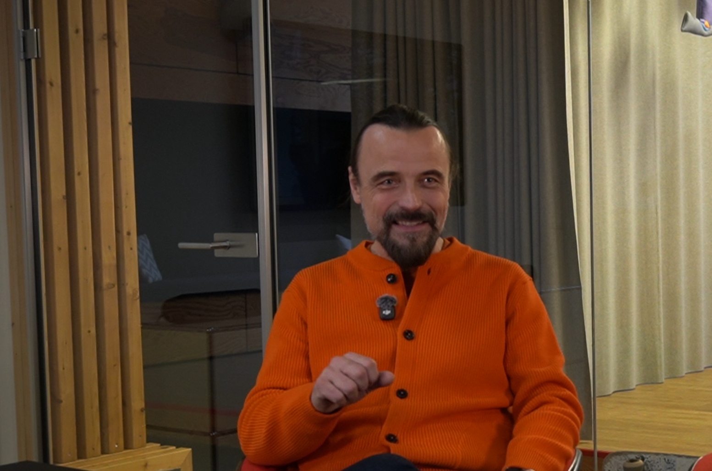

V
Ich code ja auch. Ich konnte halt code nicht, ich habe das dann gelernt und hatte das auch ohne KI erst mal gelernt. Später habe ich KI mit dem Wissen, was ich schon hatte, verwendet und war sehr “Ich müsste das machen” und da finde ich, ist KI ab und zu ziemlich gut. Also so gut, um vielleicht auch einfach Inspiration daher zu kriegen, wenn man vielleicht auch ein paar Lücken hat in seinem Code einfach mal nachzufragen, ob da irgendwas auffällt. Vor allem, wenn wir zum Beispiel irgendwelche Error Logs haben, dass wir das Spiel nicht builden können. Dann ist es halt richtig geil, das einfach so reinzupacken und zu sagen “Ich habe diesen Fehler, was können das alles für Probleme sein?” Also, da ist es wirklich hilfreich. Zum anderen aber auch, sag ich jetzt mal generative AI wie zum Beispiel bei Photoshop gibt es ja auch, dass man Sachen raus editieren lassen kann. Und das wird ja auch langsam immer besser, dass man einfach nur sagt: “Ja, ich möchte das dieses Pferd im Hintergrund weg ist." Da denke ich, ist das eigentlich auch ziemlich, sag ich jetzt mal, angenehm für Künstler*innen, weil es einfach ein nices Tool ist. Da würde ich sagen, ist es ein ziemlich hilfreiches Tool.
Klaus Neuburg
Das kann in allen Branchen eigentlich total helfen. Ich habe zum Beispiel mit jemandem gesprochen, der im VFX-Bereich unterwegs ist und für den ist es super KI zu haben, weil er einfach Dinge machen kann in kurzer Zeit, die er so vorher nicht machen konnte oder nur mit großem Aufwand machen konnte. Und er hat aber zum Beispiel erzählt, dass eben ganz viele Dinge, die früher eben vielleicht Trainees gemacht haben oder Praktikant*Innen erledigt haben, diese Arbeiten gibt man jetzt einfach irgendwelchen KI Modellen. Durch das zum Beispiel ein Problem entstehen könnte, dass die Nachwuchskräfte diese ganzen Erfahrungen nicht mehr machen können. Und das führt schon jetzt wohl dazu, dass eben immer mehr Seniors gesucht werden, die aber gar nicht entstehen können, wenn man nicht selber auch diese einfachen Erfahrung machen kann. Also da gibt es zum Beispiel schon, glaube ich, explizit kommende Probleme.
B12
Peter Werner: Berufsbilder in der Agentur sind: Texter, Konzepter, Grafikdesigner, Programmierer. Alle nutzen KI auf ihre Art und Weise mit wirklich ganz verschiedenen Tools. Man könnte sich nahezu eine Agentur ohne KI gar nicht mehr vorstellen, zumindest wenn alle anderen auch KI nutzen. Also, Wettbewerb schläft ja nicht.

Fiona Gebhardt: Wir können es nutzen, um beim Brainstorming einen Sparringpartner zu haben oder um Ideen vielleicht noch mal in eine andere Richtung pushen zu können oder um keine MockUps zu erstellen.
Albert Radl
Ich halte es in allen Bereichen für hilfreich, wenn es nicht mehr wirklich darum geht, Ideen umzusetzen, Geschichten zu erzählen oder eine Visualität erst mal zu schaffen, wenn es darum geht, Sachen zu finalisieren. Wenn es darum geht, Bilder zu erweitern, Bilder zu retuschieren, dann ist das wahnsinnig hilfreichreiches Mittel. Da sind wir aber auf der Grenze zwischen wirklich generativer KI oder einfach einem schlauen Programm, was einfach ein Plugin hat, was gut arbeitet. Und da ist natürlich auch so eine schwimmende Grenze, auch im Photoshop. Wo fängt genau generative KI an? Und deswegen tue ich mich natürlich auch schwer damit, irgendwie für mich da eine Grenze zu ziehen. Das eine benutze ich, das andere nicht, weil ich das dann auch nicht verstehe, was machen die Datensätze da? Ich arbeite nur in einer Branche, deswegen kann ich das jetzt nicht auf alle übertragen. Aber mein Eindruck ist, weil ich auch von meiner Familie gespiegelt werde. Jetzt sehen alle das Gleiche, dass ihr Job in Gefahr ist. Und man muss ja nur bis drei zählen können. Das wird unsere komplette Berufswelt auf den Kopf stellen und genauso Leute, die in der Versicherung arbeiten. Leute, die im künstlerischen Business arbeiten. Alle sind davon betroffen.
Fabio Kolligs
Ich finde das eine sehr schwierige Frage, weil meine persönliche Auffassung von KI ist, was ich in meinem Studium darüber gelernt habe und da haben wir gelernt, dass alle diese neuronalen Netzwerke, die man halt irgendwie trainiert, dass die Funktionen approximieren. Das heißt, es muss irgendwie eine Funktion geben, die sie approximieren. Und in der Vergangenheit hat man als Mensch, wenn man irgendwie Interesse an einem Algorithmus hatte, halt einfach die Arbeit selber reingesteckt, um diese Funktion zu entdecken, wie die funktioniert und hat dann ein Verständnis dafür, sich aufgebaut. Und jetzt benutzen wir halt Machine Learning, um für uns diese Funktion zu entdecken und auszuführen. Und dadurch wissen dann oft die Menschen überhaupt nicht, was macht die KI da jetzt gerade? Wie kommt sie auf ihre Lösungen? Es macht es schwieriger, diese Funktionen irgendwie zu korrigieren, wenn da Fehler drin sind oder zu modifizieren, wenn man irgendwie ein anderes Ergebnis haben möchte, was nur leicht abweicht und deswegen finde ich es schwierig zu sagen, dass man KI irgendwofür braucht, weil alles was KI machen kann, muss theoretisch auch möglich sein wenn ein Mensch einen Algorithmus schreibt, es würde halt nur länger dauern, den zu entwickeln und daher sehe ich vielleicht bei manchen Dingen, die sehr Zeitsensitiv sind, wo man schnell etwas stehen muss, um Menschen aktiv zu helfen. Wie vielleicht in der Medizin. Da könnte ich sehen, dass es eventuell berechtigte Anwendungsfälle für KI gibt, in allem anderen, was aber eher in Richtung Entertainment geht oder nicht so zeitintensive Aufgaben betrifft. Da wäre es mir deutlich lieber, wenn wir als Menschheit uns die Zeit nehmen würden, diese Funktionen tatsächlich auch zu verstehen, weil wir dadurch wie gesagt, sie verbessern können. Wir können sie vereinfachen, damit sie schneller laufen. Wir können darauf achten, was uns wichtig ist bei diesen Funktionen, ob wir irgendwo eine gewisse Fehlerrate in Kauf nehmen oder ob es uns wichtig ist, dass überhaupt keine Fehler passieren etc..